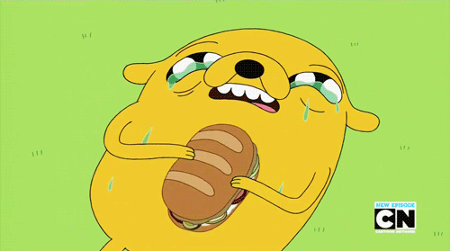

Jake's most delicious sandwich is, according to Jake from the populat TV cartoon :Adventure Time", "the greatest sandwich [he's] ever made." It appears in the episode "Time Sandwich."
Get into the zone.
Slice baguette and toast both sides, apply cream cheese and pickles from my boy Prismo and some dill.
spread the Diced boiled eggs, bird from the window and cucumbers.
Sliced Roma tomatoes and sweet yellow onions-organics.
Tears for salt.
Meat prepared sou-vide and bacon.
lobster soul.
Return to menu